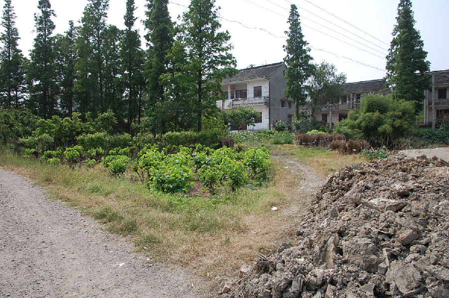

嘉兴市文物保护网 · 市级文物保护点 · 2020-11-09 · 原文

黄姑庵遗址位于嘉兴市南湖区余新镇金星村9组。东面和南面临河，中间有一条乡村道路。遗址占地面积6000平方米，东西约60米，南北约100米。遗址南侧有一高墩，高约1米，面积为360平方米，其上种桑树和建造房子，遗址其余地方也多处造有房子。据出土文物分析，黄姑庵遗址为新石器良渚文化至春秋战国时期的遗址。遗址具有一定规模，延续时间长，有较高的历史和科学价值。1992年公布为嘉兴市文物保护点。